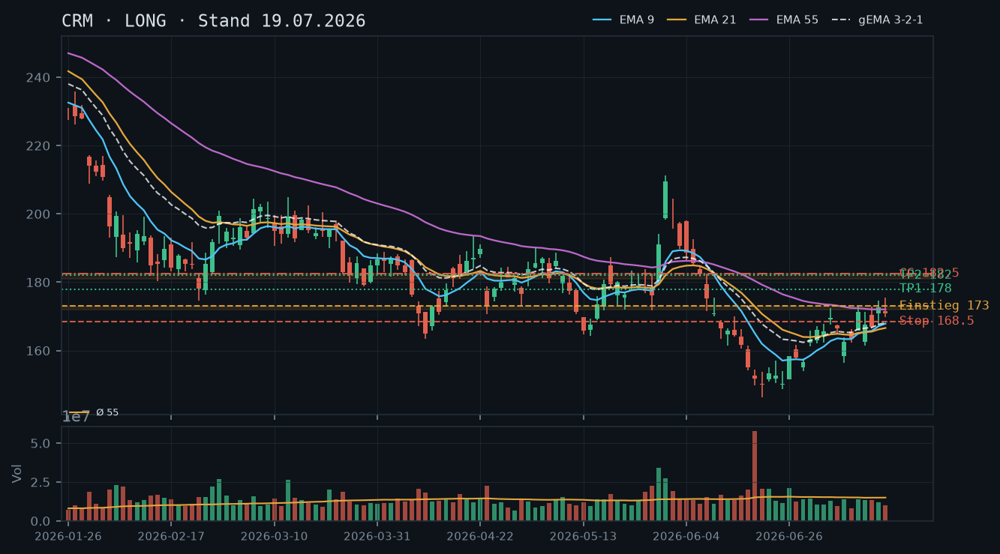
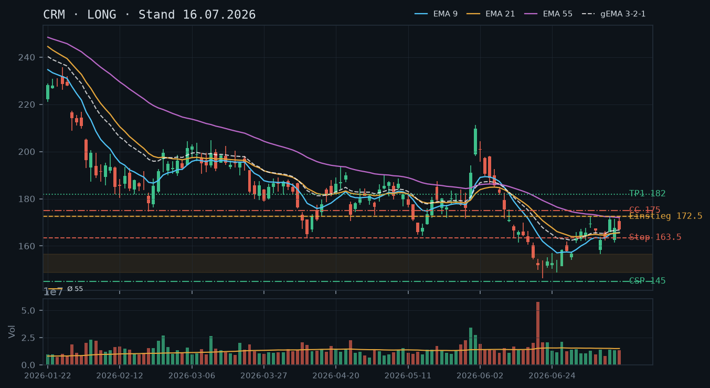
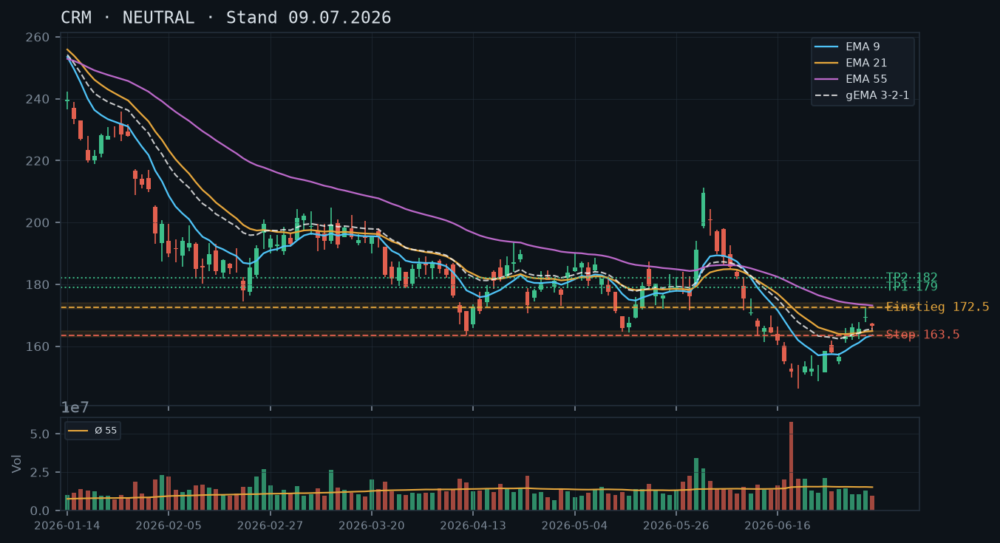
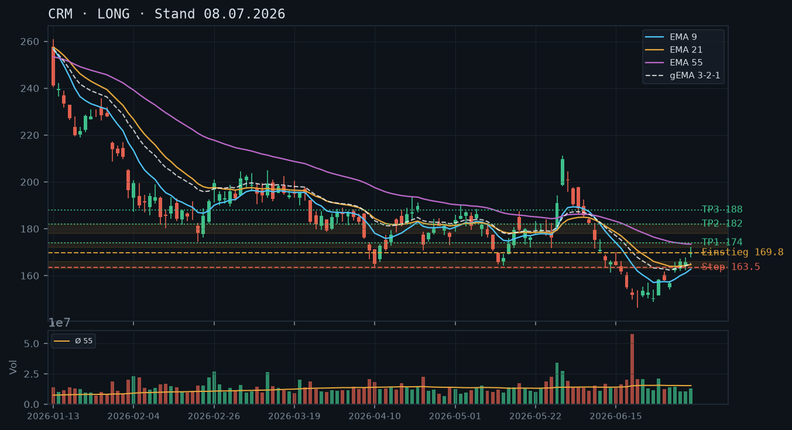

CRM
Analyse-Historie · neueste zuerstCRM bricht am 22.07. mit einem Bearish Engulfing klar unter den EMA9/21-Cluster (~168) und testet damit die kritische Unterstützungszone 161–163 – das Long-Bias der Voranalysen ist vorerst neutralisiert, der CC 182,50 (Verfall 25.07.) ist wertlos verfallen bzw. steht kurz davor, der Bestand bleibt long und wartet auf Stabilisierung.

1 · Trendstruktur
CRM hat nach dem Swing-Hoch vom 17.07. bei 175,43 drei tiefere Hochs und tiefere Schlusskurse gebildet (175,43 → 175,39 → 172,43 → 169,57), was eine kurzfristige Abwärtssequenz etabliert. Der Schlusskurs vom 22.07. bei 163,00 hat den gesamten EMA9/21-Verbund (~167–168) nach unten durchstoßen und nähert sich der mehrfach getesteten Unterstützungszone 161–163 (Swing-Tiefs 09.07. bei 156,48/162,50 und der Konsolidierungsbasis 29.06.–01.07. um 163). Übergeordnet: Das Swing-Tief vom Juni-Sell-off (146,32 am 22.06.) ist die entscheidende Kumulationsgrenze. Erst ein Tagesschluss über 172,80 (mehrfach getesteter Widerstand) würde das bullische Bild aus der 19.07.-Analyse reaktivieren.
2 · Candlestick-Formationen
Die Kerze vom 22.07. ist ein klassisches Bearish Engulfing relativ zur Vortageskerze (21.07.: Doji-artiger Körper 170,06, Range 166,93–172,43): Eröffnung 169,47, Hoch 169,57 (fast Doji-Niveau), Schluss 163,00 – ein starker Sell-off mit knapp 4% Tagesverlust auf leicht unterdurchschnittlichem Volumen (rel. Volumen 0,81). Das Volumen ist damit keine Panik-Kerze mit Kapitulations-Charakter, sondern ein kontrollierter, aber entschlossener Verkaufsdruck – das Fehlen einer Umkehr-Kerze am Tagestief 162,21 macht eine sofortige Erholung weniger wahrscheinlich. Der Intraday-Snapshot zeigt den Kurs bei 164,60 (+0,98% vom Vortagsschluss 163,00), also eine kleine technische Gegenbewegung direkt an der Unterstützungszone.
3 · EMA-Lage (9 / 21 / 55)
EMA9 (168,00) und EMA21 (167,10) liegen eng beieinander und beide über dem Kurs – bullische Unterstützung fehlt aktuell. EMA55 (171,68) ist ebenfalls über dem Kurs. Der gema_321 (168,31) liegt über Kurs und Schlusskurs 163,00 – alle drei EMAs haben der Kurs von unten, was eine bearische EMA-Lage signalisiert. Der EMA9 dreht nach unten, was den kurzfristigen Trend bestätigt. Im Vergleich zur 19.07.-Analyse, als CRM (172,68) erstmals über den EMA55 (172,01) ausgebrochen war, hat sich das Bild vollständig umgekehrt – der Ausbruch war nicht nachhaltig und wird hiermit explizit verworfen.
4 · Trade-Setup
| Richtung | Kein Trade |
| Einstieg | Kein aktiver Einstieg – abwarten, ob 161–163 als Support hält |
| Stop | n/a |
| Ziel | n/a |
| CRV | n/a |
5 · Stillhalter (max. 12 Tage)
Der CC 182,50 (Verfall 25.07.) ist mit aktuellem Kurs ~164,60 weit aus dem Geld und verfällt wertlos – Prämie wurde vereinnahmt, Aktienbestand bleibt. Ein neuer CC oberhalb relevanter Widerstände ist erst sinnvoll, wenn CRM wieder über 172,80 schließt. Das aktuelle Bild erlaubt hingegen einen konservativen CSP tief unterhalb der Zone, um den Bestand durch Prämieneinnahme zu 'unterfüttern', sofern der Puffer akzeptabel ist.
| Geschäft | Cash-Secured Put |
| Strike | 152.5 |
| Puffer | 7.3 % |
| Zone | unter der mehrfach getesteten Konsolidierungszone 154–157 (22.06.–30.06., Tiefs 150,12/150,85/154,07) |
| Verfall bis | 2026-08-01 (9 Tage, nächster Standard-Freitag nach dem 25.07.) |
| Begründung | Strike 152,50 liegt klar unterhalb der Juni-Konsolidierungsbasis 154–157, die in der Woche vom 22.–30.06. mehrfach gehalten hat (Tiefs bei 150,12 / 150,85 / 154,07). Der Puffer von 7,3% zum aktuellen Snapshot-Kurs 164,60 stellt sicher, dass die gesamte Konsolidierungszone als Puffer vorgelagert ist. Andienungsszenario: Wird CRM bei 152,50 angedient, handelt man im Bereich der Juni-Konsolidierung – strukturell vertretbar, da das absolute Swing-Tief vom 22.06. bei 146,32 noch darunter liegt und bei einem solchen Einstand ein weiterer CSP oder CC das Risiko reduzieren würde. Rollentrigger: Unterschreitet CRM 156,00 auf Tagesschlussbasis mit erhöhtem Volumen (>1,3x Schnitt), ist der Strike bedroht – dann Prüfung eines Rolls auf 147,50 oder 150,00, gleichem oder kurzem Verfall. In der Optionskette zu prüfen: Prämie am 152,50er Put für 01.08.-Verfall (Mid-Prämie sollte mindestens 0,8–1,0% des Kurses reflektieren), Delta idealerweise –0,15 bis –0,22, Spread-Enge als Liquiditätscheck. |
Bestand: Bestand: 200 Aktien CRM long, keine offenen Optionen (IBKR-Snapshot 11:38 Uhr). Der CC 182,50 (Verfall 25.07.) aus der 19.07.-Analyse ist mit aktuellem Kurs ~164,60 tief aus dem Geld und verfällt in zwei Tagen wertlos – Prämie vereinnahmt, kein Rollbedarf. Ein neuer CC wird erst empfohlen, wenn CRM wieder über 172,80 auf Tagesschlussbasis steigt. Bis dahin: CSP 152,50 (Verfall 01.08.) als alleiniges Stillhalter-Instrument prüfen.
Ausführliche Analyse vom 23.07.2026 anzeigen
CRM – Technische Analyse 23.07.2026
1. Trendstruktur & Abgleich mit Voranalysen
Die 19.07.-Analyse hatte den Ausbruch über 172,80 als technisch klarste Signallage seit Wochen bezeichnet und einen Long-Bias mit CC 182,50 empfohlen. Dieser Ausbruch hat sich als Bull-Trap erwiesen: Das Hoch vom 17.07. bei 175,43 blieb das Swing-Hoch; seither folgte eine Serie tieferer Hochs und tieferer Schlusskurse (175,43 → 175,39 → 172,43 → 169,57 → 163,00). Der Tagesschluss vom 22.07. bei 163,00 liegt unterhalb aller drei EMAs und damit im Bereich der kritischen Support-Zone 161–163.
Übergeordnete Struktur: Das absolute Swing-Tief des Juni-Sell-offs liegt bei 146,32 (22.06., rel. Volumen 3,82 – Extremereignis). Die Erholung von dort lief bis 175,43, scheiterte aber dreimal an der Zone 172,38–175,43 und dreht nun wieder ab. Solange kein Tagesschluss über 172,80 gelingt, ist das bullische Bild der Voranalysen neutralisiert.
Kritische Levels:
- Support 1: 161,00–163,00 (Swing-Tiefs 09.07. bei 156,48/162,50, Konsolidierungsbasis 29.06.–01.07. ~163)
- Support 2: 154,00–157,00 (Juni-Konsolidierung 22.–30.06., Tiefs 150,12/150,85/154,07)
- Support 3 / Absolutes Tief: 146,32 (22.06., Volumen-Extremtag x3,82)
- Widerstand 1: 167,00–168,00 (EMA9/21-Cluster, ex-Support wird zu Resist)
- Widerstand 2: 172,38–175,43 (mehrfach gescheiterte Ausbruchszone Juli)
- Widerstand 3: 181,00–182,00 (April/Mai-Zone, Ziel der Voranalysen, noch ungetestet)
2. Candlestick-Analyse
Die Kerze vom 22.07. verdient besondere Aufmerksamkeit: Bearish Engulfing relativ zur Doji-artigen Vortageskerze (21.07.: Körper nur 3,33 Punkte Spread bei Range 5,50). Der 22.07.-Körper (169,47 → 163,00) verschlingt den gesamten Körper und die Range des Vortages vollständig. Klassisch bearisches Reversal-Signal nach der vorangegangenen Aufwärtsbewegung. Kritisch dabei: Das Volumen war mit rel. 0,81 unterdurchschnittlich – keine Kapitulationskerze, sondern kontrollierter Abgabedruck ohne panische Schlussphase. Das Tagestief bei 162,21 wurde nicht als Hammer oder Doji beendet, was eine sofortige V-Umkehr weniger wahrscheinlich macht.
Der Intraday-Kurs von 164,60 (+0,98%, Snapshot 11:38 Uhr) deutet eine kleine technische Gegenbewegung an der Unterstützungszone an – noch keine Bestätigung einer Umkehr.
3. EMA-Analyse
Die EMA-Situation hat sich gegenüber der 19.07.-Analyse vollständig umgekehrt:
- EMA9: 168,00 – dreht nach unten, Kurs darunter
- EMA21: 167,10 – flacht ab, Kurs darunter
- EMA55: 171,68 – noch leicht fallend, Kurs klar darunter
- gema_321: 168,31 – über Kurs, bearisch
Am 19.07. war CRM erstmals über EMA55 (172,01) geschlossen und das wurde als Kaufsignal gewertet. Dieser Ausbruch hielt nur zwei Tage (16./17.07. mit Hochs bis 175,43) und wurde nicht volumenbestätigt – das war der entscheidende Warnhinweis aus der Voranalyse, der sich nun bewahrheitet. Die EMA-Reihenfolge EMA9 < EMA21 < EMA55 mit Kurs unter allen dreien ist klar bearisch für den kurzfristigen Zeitrahmen.
4. Trade-Setups (Alternative Szenarien)
Szenario A – Abwarten und Bestätigung Support 161–163 (bevorzugt): Kein direktionaler Trade, bis CRM über 167,00 (EMA9) auf Tagesschlussbasis zurückschließt. Erst dann wäre ein Long-Einstieg mit Stop unter 161,00 und Ziel 172,80 (CRV ~2,6:1 auf Basis 167/161/172,80) diskutierbar.
Szenario B – Short bei gescheiterter Erholung: Fällt CRM unter 162,00 auf Tagesschlussbasis, öffnet sich das Ziel 154–157 (Zone) mit Short-Einstieg ~162, Stop 167,50 (über EMA9), Ziel 155,00 – CRV ~1,3:1, mäßig. Angesichts des bestehenden Long-Aktienbestands ist ein direktionaler Short nicht empfehlenswert (würde Position hedgen statt handeln).
Szenario C – Direkt-Long bei Volumenbestätigung: Kauft CRM intraday über 167,00 zurück mit Volumen >1,3x Schnitt, wäre ein aggressiverer Re-Entry möglich – Stop 161,00, Ziel 172,80, CRV ~1,0:1. Zu enges CRV für einen neuen Einstieg.
→ Kein direktionaler Trade empfohlen. Qualität vor Aktionismus.
5. Stillhalter-Analyse (Schwerpunkt)
CC 182,50 (Verfall 25.07.) – Status
Der aus der 19.07.-Analyse empfohlene Covered Call 182,50 (Verfall 25.07.) ist mit dem aktuellen Kurs von ~164,60 rund 18 Punkte (11%) aus dem Geld und verfällt in zwei Handelstagen wertlos. Die Prämie wurde vollständig vereinnahmt. Kein Rollbedarf. Der Aktienbestand (200 Stück) bleibt unverändert long.
Neuer CSP 152,50 (Verfall 01.08.) – Herleitung
Die technische Ableitung des Strikes erfolgt aus der Juni-Konsolidierungszone 154–157: In der Woche 22.–30.06. testete CRM diese Zone mehrfach (Tiefs: 150,12 / 150,85 / 154,07 / 154,23), wobei die Zone nach dem Extremtag vom 18.06. (Volumen x3,82, Tief 149,80) als neue Unterstützung etabliert wurde. Strike 152,50 liegt unterhalb dieser Zone – die Zone selbst dient als Puffer zwischen aktuellem Kurs (164,60) und Strike.
Puffer-Rechnung: (164,60 – 152,50) / 164,60 = 7,35% → gerundet 7,3%.
Andienungsszenario: Wird CRM bei 152,50 angedient, handelt man im unteren Bereich der Juni-Konsolidierung, rund 4% über dem absoluten Swing-Tief (146,32). Das ist ein strukturell vertretbarer Einstieg – der Durchschnittseinstand des Bestands (200 Aktien) wird dadurch faktisch verbessert. Bei Andienung: sofortige CC-Strategie auf die neuen 100 Stück über dem nächsten relevanten Widerstand (167–168) prüfen.
Roll-Trigger CSP: Unterschreitet CRM 156,00 auf Tagesschlussbasis mit Volumen >1,3x Schnitt, droht die Konsolidierungszone zu brechen. In diesem Fall: Roll auf 147,50 oder 150,00 prüfen (unterhalb des unbestätigten Supports bei 149,80 / absolutes Tief 146,32), gleiche oder um eine Woche verlängerte Laufzeit. Unterschreitet CRM 149,80 mit Volumen, ist der Put tief im Geld – dann Schließung und Neubewertung.
Kein neuer CC empfohlen, solange CRM unter 172,80 notiert. Ein CC auf aktuellen Kursleveln (~165–168) würde den Aktienbestand bei zu engem Puffer deckeln – das CRV ist bei potenzieller Erholung auf 172,80+ nicht attraktiv genug.
In der Optionskette zu prüfen (01.08.-Verfall, Strike 152,50): Mid-Prämie sollte mindestens 0,80–1,00% des Kurses abbilden (ca. $1,30–1,65 je Kontrakt), Delta idealerweise –0,15 bis –0,22, Bid-Ask-Spread nicht breiter als $0,15–0,20 als Liquiditätsindikator, Open Interest am 152,50er Strike prüfen.
CRM bricht nach wochenlanger EMA-Kompression erstmals über die Widerstandszone 172,38–172,80 aus und nähert sich dem EMA55 von unten – das ist das technisch klarste Bild seit Wochen, Long-Bias bestätigt, CC auf Aktienbestand sinnvoll.

1 · Trendstruktur
CRM zeigt seit dem Kapitulationstief vom 18.06. (Low 149,80, rel. Volumen 3,82x) eine Serie steigender Tiefs: 148,78 (25.06.) → 156,48 (09.07.) → 161,47 (14.07.) → 166,56 (15.07.) → 169,75 (17.07.). Die Hochs ziehen ebenfalls an: 158,46 → 167,22 → 172,80 → 175,43. Das ist eine intakte Short-Term-Uptrend-Struktur. Entscheidend: Der dreifach getestete Deckel bei 172,38–172,80 (07./13./15.07.) scheint am 16.07. (Hoch 174,54) und 17.07. (Hoch 175,43) mit Tagesschlüssen von 172,68 und 170,77 aufgebrochen zu sein – allerdings fehlen noch ein überzeugender Schlusskurs über 172,80 mit Volumen. Der aktuelle Kurs (172,68) liegt exakt auf dieser Entscheidungszone.
2 · Candlestick-Formationen
Die letzten drei Kerzen zeigen ein konstruktives Bild: 16.07. eine bullische Marubozu-nahe Kerze (Open 170,84 → Close 172,68, Hoch 174,54) mit dem ersten echten Ausbruchsversuch über 172,80; 17.07. ein bearisher Innentag mit Close 170,77 unter dem Hoch, aber mit höherem Tief (169,75) – klassisches Profit-Taking nach dem Ausbruchsversuch. Heute (19.07.) notiert CRM zum Snapshot-Zeitpunkt unverändert bei 172,68, was einem Erholungsversuch zurück an die Ausbruchszone entspricht. Muster insgesamt: Bull-Flag bzw. Flaggenkonsolidierung auf erhöhtem Niveau – kein Warnsignal, solange 169,70 als Intraday-Support hält.
3 · EMA-Lage (9 / 21 / 55)
EMA-Stand per 17.07.: EMA9 bei 167,87 / EMA21 bei 166,60 / EMA55 bei 172,01 / gema_321 bei 168,14. Erstmals seit dem Absturz handelt CRM (172,68) über allen drei EMAs – EMA9 und EMA21 liegen bullisch sortiert unterhalb des Kurses, der EMA55 (172,01) wurde per Schlusskurs 16.07. (172,68) und 17.07. (170,77) de facto geknackt bzw. testet ihn von oben. Der gema_321-Verbund (168,14) dreht nach oben und zeigt steigende Steigung – das ist das erste konstruktive EMA-Gesamtbild seit Anfang April. Kritisch: EMA55 (≈172,00) ist jetzt Support-Kandidat, kein Widerstand mehr.
4 · Trade-Setup
| Richtung | Long |
| Einstieg | 173,00 (Stop-Buy / Intraday-Breakout über die Ausbruchszone mit Schluss über 172,80) |
| Stop | 168,50 (unter dem Innentag-Tief 17.07. bei 169,75 und dem EMA9-Cluster ~167,87) |
| Ziel | 182,00 (April/Mai-Widerstandszone, unverändert aus Voranalysen) |
| CRV | 2,0 : 1 |
5 · Stillhalter (max. 12 Tage)
Mit 200 Aktien im Bestand ist ein Covered Call (2 Kontrakte) das primäre Stillhalter-Werkzeug. Der Ausbruch über 172,80 ist noch nicht volumenbestätigt – das macht einen CC oberhalb der nächsten Widerstandszone attraktiv: man kassiert Prämie in einer Phase, in der der Kurs noch ringen muss. Ein CSP ist angesichts der aktuellen Position (200 Aktien long) als zusätzliches Exposure nur bei sehr konservativem Strike sinnvoll und deshalb hier nicht primär empfohlen.
| Geschäft | Covered Call |
| Strike | 182.5 |
| Puffer | 5.7 % |
| Zone | oberhalb der April/Mai-Widerstandszone 181–182 (Swingtiefs Mitte April, mehrfache Tests) |
| Verfall bis | 2026-07-25 (6 Tage, nächster Standard-Freitag) |
| Begründung | Strike 182,50 liegt knapp über der mehrfach als Widerstand fungierenden Zone 181–182 (April-Hochs, Schlusskurse 16./17.04., Trendfortsetzungsziel aus den Voranalysen). Der Puffer von 5,7% vom aktuellen Kurs (172,68) stellt sicher, dass der Strike erst bei einem vollen Durchbruch durch die Zone erreicht wird. Andienung bei 182,50 wäre ein akzeptabler Exit für den Aktienbestand: strukturell eine starke Widerstandszone, ökonomisch ein guter Abgabekurs nach der Erholung vom Tief. Rollentrigger: Tagesschluss über 180,00 mit rel. Volumen > 1,5x – dann Prüfung eines Rolls auf 185,00 oder 187,50 mit gleichem oder längerem Verfall. In der Optionskette zu prüfen: Prämie in Relation zum 5,7%-Puffer (bei 6 Tagen DTE sollte Mid-Prämie mindestens 0,8–1,2% des Kurses abbilden), Delta idealerweise –0,20 bis –0,30, Spread-Enge als Liquiditätscheck. |
Bestand: Bestand: 200 Aktien CRM long, keine offenen Optionen laut Snapshot. Der CC 182,50 (Verfall 25.07.) deckt den gesamten Bestand ab (2 Kontrakte). Rolllogik: Läuft CRM bis Verfall unter 182,50, verfällt der CC wertlos – Prämie vereinnahmt, Position bleibt. Überschreitet CRM 182,50 mit Momentum, vor Verfall rollen auf 185,00–187,50 gleicher Laufzeit oder auf den nächsten Freitag (01.08.). Keine offenen Puts vorhanden, daher kein Rollbedarf auf der Put-Seite.
Ausführliche Analyse vom 19.07.2026 anzeigen
CRM – Technische Analyse & Stillhalter-Report | 19.07.2026
1. Trendstruktur & Abgleich Voranalysen
Die Analyse vom 16.07. prognostizierte ein "unüberzeugendes" Setup mit Stagnation unter EMA55. Diese Einschätzung ist zu verwerfen: Die Tage 16.07. und 17.07. haben das Bild grundlegend verändert. Mit Hochs von 174,54 und 175,43 wurde die dreifach getestete Deckelzone 172,38–172,80 nach oben durchbrochen – erstmals mit zwei aufeinanderfolgenden Tageshochs über diesem Level.
Die Uptrend-Struktur seit dem Kapitulationstief (18.06., Close 151,78, rel. Volumen 3,82x – stärkster Handelstag der gesamten 90-Kerzen-Serie) ist klar: Steigende Tiefs 148,78 → 156,48 → 161,47 → 166,56 → 169,75; steigende Hochs 153,87 → 158,46 → 167,22 → 172,80 → 175,43. Jeder Swing-Punkt bestätigt die Struktur.
Kritischer Bereich aktuell: Die Zone 172,00–173,00 ist jetzt die Entscheidungszone – hier liegt EMA55 (172,01 per 17.07.), die alte Deckelzone und der aktuelle Kurs (172,68). Ein Tagesschluss klar darüber mit ansteigendem Volumen wäre der technische Bestätigungsschuss für den nächsten Leg Richtung 182,00.
Das Long-Setup aus der 08.07.-Analyse (Einstieg 169,80, Stop 163,50, Ziel 182,00) ist aktiv und im Profit. Der Stop bei 163,50 ist unverändert technisch valid, sollte aber für aktive Trader auf 168,50 nachgezogen werden (unter dem letzten Swing-Tief 169,75 vom 17.07.).
2. Candlestick-Formationen
15.07.: Bearisher Inside-Day (Close 167,00), der den Doji-Charakter nach dem Ausbruchsversuch 13.07. (172,76) zeigte – Schwäche nach dem ersten Test. 16.07.: Starke bullische Kerze, Open 170,84 → Close 172,68 (+2,8%), Hoch 174,54 – erster Schlusskurs über EMA55 seit Wochen. Kein langer Docht oben: Käufer blieben bis Handelsschluss dabei. Rel. Volumen 0,81x – Schwachstelle: kein Volumenrückenwind.
17.07.: Bearisher Innentag / Shooting-Star-Hybrid. Open 171,50, Hoch 175,43 (neues Mehrwochen-Hoch!), Close 170,77. Der lange Docht oben zeigt Verkäuferdruck bei 175,43. Allerdings ist das Tief (169,75) höher als das Vortagestief (166,88) – die Bullen haben die Kontrolle über die Tiefs. Rel. Volumen 0,68x – ruhiger Tag, kein Panikverkauf.
Muster: Bull-Flag / High-Base auf erhöhtem Niveau. Der Haken oben am 17.07. ist kein Reversal-Signal, solange 169,75 hält.
3. EMA-Analyse
Per 17.07.: EMA9 (167,87) < EMA21 (166,60) < EMA55 (172,01) – Hinweis auf Kompressions-Artefakt: EMA21 liegt unter EMA9, was bei flacher Bewegung nach oben normal ist, aber hier ist auffällig, dass EMA55 noch über EMA9 notiert. Das zeigt: Der schnelle EMA (9) ist bereits nach oben beschleunigt und hat EMA21 überholt, kämpft aber noch gegen den trägen EMA55 (172,01), der den Schnitt der letzten 55 Tage inklusive des starken Abverkaufs abbildet.
Der gema_321-Verbund (168,14, Gewichtung EMA9×3 + EMA21×2 + EMA55×1 / 6) dreht seit 13.07. nach oben – das ist der erste konstruktive Trend im gewichteten Verbund seit dem April-Topp. Die Steigung der letzten vier Tage ist positiv.
Schlüsselmarke: EMA55 bei ~172,00. Ein überzeugender Tagesschluss darüber mit Volumen > 1,2x Durchschnitt wäre der EMA-technische Trigger für den nächsten Aufwärtsschub.
4. Trade-Setups (Alternativen)
Setup A – Bevorzugt: Breakout-Buy
Einstieg: 173,00 (Stop-Buy, Tagesschluss über 172,80)
Stop: 168,50 (unter Swing-Tief 17.07., ~2,6% Risiko)
Ziel 1: 178,00 (Bereich des April-Doppelhochs 21./22.04.)
Ziel 2: 182,00 (Voranalyse-Ziel, April/Mai-Widerstand)
CRV zu Z1: 1,7:1 | CRV zu Z2: 2,0:1
Setup B – Pullback-Buy (aggressiver)
Einstieg: 170,00–170,50 (EMA9-Bereich, sofern heutiger Rücksetzer)
Stop: 168,50
Ziel: 182,00
CRV: ~2,6:1 – besseres Verhältnis, aber Einstieg muss vom Markt geliefert werden
Setup C – Kein Trade / Warten
Falls der Kurs unter 168,50 (letztes Swing-Tief) schließt: Setup invalidiert, Neubewertung nötig. In diesem Szenario würde die Zone 163,50–165,00 als nächste Unterstützung relevant.
5. Stillhalter-Analyse (Schwerpunkt)
Covered Call – Strike 182,50, Verfall 25.07.2026 (6 Tage)
Zonen-Herleitung: Die Zone 181,00–182,50 fungierte im April als Widerstand (Schlusstiefs 15.04.: 177,60 / Hochs 17.04.: 187,98 – der relevante Verdichtungsbereich der Schlusskurse 16./17.04. liegt bei 181–182). Das Analyseziel aus drei aufeinanderfolgenden Voranalysen (08.07., 09.07., 16.07.) lautet einheitlich 182,00 – diese Konvergenz aus fundamentaler Kursziellogik und technischer Widerstandszone macht 182,50 zum idealen Strike für den CC.
Andienungsszenario: Bei Andienung (Kurs ≥ 182,50 am 25.07.) würden die 200 Aktien zu 182,50 abgerufen. Das entspräche einer Rendite von +5,7% auf den aktuellen Kurs (172,68) in 6 Tagen – strukturell ein akzeptabler Exit, da 182,50 mitten in einer nachgewiesenen Widerstandszone liegt. Der Verlust des Upside über 182,50 ist der einzige Nachteil; angesichts des fehlenden Volumenbestätigung am Ausbruch ein vertretbares Risiko.
Roll-Trigger: Tagesschluss über 180,00 mit rel. Volumen > 1,5x: dann vor Verfall auf 185,00 oder 187,50 rollen (gleicher Verfall 25.07. oder nächster Freitag 01.08.). Tagesschluss unter 168,50: CC läuft ins wertlose Verfallen – Aktienposition neu beurteilen.
Optionskette (manuell zu prüfen): Delta idealerweise –0,20 bis –0,28 (OTM, aber nicht zu weit draußen). Mid-Prämie: bei 6 DTE und 5,7% OTM sollte die Prämie bei normaler IV (ca. 30–35%) im Bereich 1,20–1,80 USD liegen – prüfe aktuellen Mid und Bid/Ask-Spread. Open Interest am 182,50-Strike für Juli-Verfall prüfen (Liquidität).
CSP-Begründung (null): Mit 200 Aktien bereits long ist ein zusätzlicher CSP eine Verdopplung des Downside-Exposures auf CRM. In der aktuellen Phase, wo der Kurs an einer entscheidenden Widerstandszone kämpft, ist das Risiko-Rendering eines weiteren Long-Exposures nicht gerechtfertigt. Erst bei klarem Ausbruch und Pull-Back auf frische Support-Zone (z.B. 168–170) wäre ein CSP auf 160,00 oder 157,50 zu prüfen.
Der Long-Trigger vom 09.07. (172,50) wurde am 13.07. mit Hoch 172,76 knapp ausgelöst, seither aber stagniert der Kurs mit zwei tieferen Schlusskursen in Folge (167,56/167,00) in einem eng komprimierten EMA-Cluster unterhalb von EMA55 – ein technisch aktives, aber bislang unüberzeugendes Setup. Ziel 182,00 bleibt unverändert.

1 · Trendstruktur
Nach dem tiefen Abverkauf von 209,60 (01.06.) auf 150,12 (22.06.) verlief die Erholung holprig: Der erste Trigger (169,80, 08.07.) wurde nie erreicht, der Kurs fiel stattdessen auf 166,58 zurück. Der nachfolgende Trigger (172,50, 09.07.) wurde am 13.07. mit einem Tageshoch von 172,76 knapp ausgelöst – dieselbe Marke wurde am 15.07. mit 172,80 nochmals fast identisch getestet, jeweils ohne nachhaltigen Durchbruch. Seit dem Trigger-Tag zeigt der Kurs zwei tiefere Schlusskurse in Folge (167,56 → 167,00), ein Zeichen fehlenden Momentums trotz formal aktivem Setup.
2 · Candlestick-Formationen
13.07.: starke Kerze mit Hoch 172,76, Schluss 171,22 nahe dem Hoch – klarer Trigger. 14.07.: Pullback mit Tief 161,47, Schluss 167,56 – deutliche Rückgabe der Gewinne. 15.07.: erneuter Test von 172,80 intraday, aber Schluss bei nur 167,00 – ein zweites Scheitern an derselben Marke binnen drei Tagen, ein klares Warnsignal für die Tragfähigkeit des Ausbruchs.
3 · EMA-Lage (9 / 21 / 55)
Enger Kompressionscluster: EMA21 (165,53) und EMA9 (165,76) liegen praktisch übereinander, gema_321 (166,73) knapp darüber – nur 1,2 Punkte Spanne. EMA55 (172,03) liegt deutlich darüber und deckt sich fast exakt mit der doppelt getesteten Widerstandsmarke 172,76/172,80. Der Kurs (167,00) bewegt sich innerhalb des unteren Clusters – die eigentliche Entscheidung fällt erst bei einem Schluss über EMA55.
4 · Trade-Setup
| Richtung | Long |
| Einstieg | Bereits ausgelöst am 13.07. bei 172,50, aber seither zweimal an derselben Marke (172,76/172,80) gescheitert; Bestätigung für Zukauf: Tagesschluss über EMA55 (172,03) |
| Stop | 163,50 (unverändert, unter dem EMA-Cluster und dem Swing-Tief-Bereich 161,20–161,47) |
| Ziel | 182,00 (unverändert, April/Mai-Widerstandszone) |
| CRV | 1,1 : 1 (auf Basis des Trigger-Kurses 172,50) – mäßig, passend zum bisher unüberzeugenden Nachlauf |
5 · Stillhalter (max. 12 Tage)
Die mehrfach getestete Zone 148,78–156,48 (22.06.–09.07.) bietet eine solide CSP-Basis. Die doppelt getestete Widerstandsmarke 172,38–172,80 (07./13./15.07., faktisch dreifach) liefert einen technisch gut abgesicherten CC-Anker, passend zur aktuell stockenden Aufwärtsbewegung.
| Geschäft | Cash-Secured Put |
| Strike | 145.0 |
| Puffer | 13.2 % |
| Zone | unter der mehrfach getesteten Zone 148,78–156,48 (22.06., 25.06., 09.07.) |
| Verfall bis | 2026-07-24 (8 Tage) |
| Begründung | Strike liegt klar unter der über zwei Wochen mehrfach verteidigten Zone. Andienung bei 145,00 wäre ein Einstieg unter der gesamten Konsolidierungsphase seit dem Junitief – strukturell vertretbar. Prüfen: Prämie im Verhältnis zum 13,2%-Puffer, Liquidität am 145er. |
| Geschäft | Covered Call |
| Strike | 175.0 |
| Puffer | 4.8 % |
| Zone | über der dreifach getesteten Widerstandsmarke 172,38–172,80 (07., 13., 15.07.) |
| Verfall bis | 2026-07-24 (8 Tage) |
| Begründung | Strike liegt knapp über der Marke, an der der Kurs bereits zweimal gescheitert ist – passend zur aktuell stockenden Dynamik. Der engere Puffer (4,8%) ist bewusst gewählt, da die wiederholten Fehlversuche an dieser Zone für eine gewisse Stabilität sprechen. Andienung bei 175,00 wäre nach einem echten Ausbruch über EMA55 ein akzeptabler Exit. Prüfen: Prämie im Verhältnis zum 4,8%-Puffer, Liquidität am 175er; Rollentrigger wäre ein Tagesschluss über 172,80 mit deutlich erhöhtem Volumen (bislang fehlt diese Bestätigung). |
Ausführliche Analyse vom 16.07.2026 anzeigen
CRM – Trigger ausgelöst, aber zweifach an derselben Marke gescheitert
1. Der holprige Weg zum Trigger
Der erste Versuch (169,80, 08.07.) scheiterte, ohne dass die Position eröffnet wurde. Der zweite Trigger (172,50, 09.07.) wurde am 13.07. erreicht – doch bemerkenswert ist, dass der Kurs seither exakt an dieser Marke zweimal gescheitert ist (13.07.: Hoch 172,76; 15.07.: Hoch 172,80), jeweils mit deutlich niedrigerem Schlusskurs. Das ist ein klassisches Double-Top-Muster im Kleinen und ein Warnsignal, auch wenn der Trigger formal ausgelöst wurde.
2. Warum EMA55 der eigentliche Schlüssel ist
EMA55 (172,03) liegt fast exakt auf der doppelt gescheiterten Widerstandsmarke – das ist kein Zufall, sondern zeigt, dass genau hier die relevante Entscheidung fällt. Ein Tagesschluss klar darüber (nicht nur ein intraday-Touch) wäre die eigentliche Bestätigung des Trendwechsels, die bislang fehlt.
3. Setup-Einordnung
Formal LONG, aber mit ungewöhnlich schwachem CRV (1,1:1) und zwei Fehlversuchen an der Schlüsselzone – das rechtfertigt eine zurückhaltendere Positionsgröße als bei einem sauberen Ausbruch. Stop bleibt bei 163,50, Ziel unverändert bei 182,00.
4. Stillhalter-Vertiefung
CSP bei 145,00 (13,2% Puffer): Basiert auf der über zwei Wochen mehrfach verteidigten Zone 148,78–156,48. CC bei 175,00 (4,8% Puffer): Nutzt gezielt die Zone aus, an der der Kurs bereits zweimal gescheitert ist – der enge Puffer ist hier bewusst, da die Wahrscheinlichkeit eines schnellen Durchbruchs aktuell gering erscheint. Andienungsszenario CSP: Kauf bei 145,00 läge unter der gesamten Konsolidierungsphase. Andienungsszenario CC: Abgabe bei 175,00 wäre erst nach einem echten EMA55-Ausbruch wahrscheinlich und dann ein fairer Exit. Rollentrigger CSP: Tagesschluss unter 148,00. Rollentrigger CC: Tagesschluss über 172,80 mit spürbar erhöhtem Volumen – diese Bestätigung fehlt bislang bei beiden bisherigen Versuchen.
5. Abgleich mit früheren Analysen
Die Long-These vom 08./09.07. wird nur teilweise bestätigt: Der zweite Trigger hat ausgelöst, aber die erwartete Fortsetzung zum Ziel 182,00 ist bislang ausgeblieben – stattdessen zwei Fehlversuche an derselben Marke. Ziel und Stop bleiben unverändert, die Einschätzung zur Nachhaltigkeit des Ausbruchs ist aber deutlich vorsichtiger als in den Vorlagen.
CRM hat gestern den Einstieg aus der Long-Empfehlung (169.80) nicht erreicht und ist stattdessen von 169.52 auf 166.58 zurückgefallen – das bullische Momentum hat sich abgeschwächt, das Setup bleibt aber noch aktiv.

1 · Trendstruktur
CRM befindet sich in einem mittelfristigen Abwärtstrend (Hoch 211,34 am 01.06. → fallende Hochs und Tiefs). Das Tief bei 146,32 (22.06.) markiert die jüngste Unterstützung; seitdem zeigt die Struktur steigende Tiefs (146,32 → 148,78 → 154,07 → 161,20), aber das letzte Hoch bei 172,38 (07.07.) konnte nicht bestätigt werden – gestern gab der Kurs auf 164,78 nach. Widerstand liegt bei 172–174 (EMA9/21-Zone), Unterstützung bei 163–164.
2 · Candlestick-Formationen
Die Kerze vom 07.07. war eine starke Aufwärtskerze (167,68 → 172,38, close 169,52), doch gestern (08.07.) folgte ein Inside-Down-Tag mit tieferem Close (166,58) und engem Range, der unterhalb des Hochs vom Vortag schloss – kein bullisches Followthrough. Das rel_volumen von 0,65 zeigt fehlendes Käuferinteresse.
3 · EMA-Lage (9 / 21 / 55)
Alle drei EMAs fallen weiterhin (EMA9: 163,56 / EMA21: 164,90 / EMA55: 173,15), der gema_321 liegt bei 165,60 – der Kurs (166,58) notiert knapp darüber, was ein minimales bullisches Signal ist, aber bei fallenden EMAs ohne Kreuzung noch keine Trendwende bestätigt. EMA9 und EMA21 konvergieren leicht, eine bullische Kreuzung steht noch aus.
4 · Trade-Setup
| Richtung | Long |
| Einstieg | 172.50 (Stop-Buy über Widerstand 172.38) |
| Stop | 163.50 (unter EMA21 und letztem Swing-Tief 161.20) |
| Ziel | 182.00 (Widerstandszone April/Mai) |
| CRV | 2.1 : 1 |
Ausführliche Analyse vom 09.07.2026 anzeigen
CRM – Tagesanalyse 09.07.2026
1. Trendstruktur
Der mittelfristige Abwärtstrend ist intakt: Das Allzeithoch im Analyse-Zeitraum lag bei 211,34 (01.06.2026), seitdem folgte ein kontinuierlicher Absturz bis 146,32 (22.06.2026) – ein Verlust von rund 31% in nur drei Wochen. Das Volumen am 18.06. (rel_volumen 3,82 – Capitulation-Candle?) war außergewöhnlich hoch mit 57,9 Mio. Aktien, fast 4x der Norm. Seitdem stabilisiert sich der Kurs.
Steigende Tiefs seit dem Tief: 146,32 (22.06.) → 148,78 (25.06.) → 154,07 (30.06.) → 161,20 (01.07.) → 162,00 (02.07.) → 162,37 (06.07.) → 164,78 (08.07.). Das ist eine klare Abfolge steigender Tiefs, jedoch fehlt die Bestätigung durch steigende Hochs: Das letzte Hoch bei 172,38 (07.07.) wurde gestern nicht überboten.
Schlüssel-Levels: Support bei 163–164 (EMA9/21-Cluster), darunter 161,20 (Swing-Tief 01.07.), dann 157,70 (Tief 29.06.). Widerstand bei 172–174 (letzte Hochs + EMA55-Nähe), darüber 177–182 (April-Konsolidierungszone).
2. Candlestick-Formationen
Die letzten drei Kerzen erzählen eine klare Geschichte:
- 07.07. (Dienstag): Starke Aufwärtskerze, Open 169,22, High 172,38, Close 169,52 – ein guter Tag, aber der lange obere Schatten deutet auf Verkaufsdruck an der 172er-Marke hin.
- 08.07. (Mittwoch): Inside-Down-Kerze mit Close 166,58, Low 164,78. Die Kerze schloss im unteren Drittel der Vortagesrange. rel_volumen 0,65 – unterdurchschnittliches Volumen ist ambivalent (kein starker Abverkauf, aber auch kein Kaufinteresse).
Zusammen ergibt sich ein Bearish-Engulfing-ähnliches Signal auf Tagesbasis – nicht klassisch, aber der Rückfall nach dem starken Tag schwächt die Bullen. Ein Doji oder Hammer heute würde das Bild wieder aufhellen.
3. EMA-Lage
Die EMA-Konstellation ist weiterhin bärisch:
- EMA9: 163,56 – kürzester, reagiert schnell auf Kursbewegungen
- EMA21: 164,90 – knapp über EMA9, beide noch fallend
- EMA55: 173,15 – deutlich über dem Kurs, starker Widerstand
- gema_321: 165,60 – gewichteter Verbund, Kurs (166,58) liegt 0,98 Punkte darüber
Der Kurs notiert minimal über gema_321, was das erste kleine Lebenszeichen ist. Jedoch sind EMA9 und EMA21 noch nicht bullisch gekreuzt und beide fallen. Erst ein nachhaltiges Schließen über 167–168 würde die EMAs beginnen zu drehen. Der Abstand zum EMA55 (173,15) beträgt noch 6,57 Punkte – dieser wird als Widerstand wirken.
4. Trade-Setups
Frühere Analyse vom 08.07.2026 – Bewertung: Die Long-Empfehlung bei 169,80 (Stop-Buy über Tageshoch 169,52) wurde NICHT getriggert, da der Kurs gestern sofort unter das Hoch fiel. Das Setup ist technisch noch aktiv, aber das Momentum hat sich abgeschwächt. Wir halten das Setup bei, verschieben den Einstieg aber auf ein höheres Breakout-Level.
Setup A (Bevorzugt): Momentum-Long über 172,38
- Einstieg: 172,50 Stop-Buy über das Hoch vom 07.07. (172,38)
- Stop: 163,50 (unter EMA21 164,90 und Swing-Tief 161,20)
- Ziel 1: 179,00 (50%-Retrace des Abfalls von 211 auf 146)
- Ziel 2: 182,00 (April/Mai-Widerstandszone)
- CRV zu Ziel 1: 0,72 : 1 (zu gering allein)
- CRV zu Ziel 2: 2,1 : 1 (akzeptabel)
Setup B: Aggressiver Long aus Support
- Einstieg: 164,00–165,00 (Kauf an EMA9/EMA21-Cluster, sofern Kurs zurückkommt)
- Stop: 161,00 (unter letztem Swing-Tief)
- Ziel: 172,38 (letztes Hoch)
- CRV: ca. 2,5 : 1
- Risiko: Kein Bestätigungs-Trigger, höheres Rückschlagsrisiko
Setup C: Short bei Schwäche unter 161
- Einstieg: 160,80 Stop-Sell unter Swing-Tief 161,20
- Stop: 165,50
- Ziel: 150,00–148,00 (Bereich des letzten Tiefs)
- CRV: ca. 2,3 : 1
- Kommentar: Nur relevant wenn der Aufwärtstrend der Tiefs bricht
Fazit: Der Markt ist in einer Entscheidungsphase. Setup A (Breakout Long) bleibt das bevorzugte Szenario, aber es braucht einen starken Tag über 172,38 mit überdurchschnittlichem Volumen (rel_volumen > 1,2) als Bestätigung. Bis dahin: Neutral, abwarten.
CRM zeigt nach einem tiefen Abverkauf erste Erholungszeichen mit steigenden Hochs/Tiefs der letzten Wochen und bullischen Tageskerzen, bleibt aber unter allen EMAs – ein vorsichtiger Long-Einstieg mit engem Stop bietet ein attraktives CRV.

1 · Trendstruktur
CRM befindet sich in einem intakten Abwärtstrend seit dem Februarhoch (~202 $), mit dem Tief bei 149,80 $ am 18. Juni 2026. Seitdem bildet der Kurs jedoch eine Serie steigender Tiefs (149,80 → 146,32 → 148,78) und steigender Hochs (155,18 → 158,46 → 167,22 → 172,38), was auf eine beginnende Trendwende hindeutet. Wichtige Widerstände liegen bei ~172–174 $ (EMA55-Region) und ~185–190 $.
2 · Candlestick-Formationen
Die letzte Kerze vom 07. Juli (169,52 $, Schlusskurs) ist eine starke bullische Kerze mit einem Aufwärtskörper von ~4 $ und einem kleinen unteren Docht – Kaufdruck ohne nennenswerte Ablehnung. Die Vortageskerze (02. Juli) bildete ein höheres Hoch bei 167,21 $, was die Kaufdynamik bestätigt. Es liegt keine Überdehnung vor.
3 · EMA-Lage (9 / 21 / 55)
Der Kurs (169,52 $) liegt noch unter EMA9 (162,81 $) – nein, er liegt bereits leicht ÜBER EMA9 (162,81 $) und EMA21 (164,73 $), aber deutlich unter EMA55 (173,40 $) und gema_321 (165,22 $). Die EMAs sind noch in bärischer Reihenfolge (EMA9 < EMA21 < EMA55), aber EMA9 kreuzt gerade EMA21 von unten, was ein frühes bullisches Signal darstellt. Der gema_321 bei 165,22 $ wurde intraday am 07. Juli überwunden.
4 · Trade-Setup
| Richtung | Long |
| Einstieg | 169.80 (Stop-Buy über Tageshoch 169,52) |
| Stop | 163.50 (unter EMA21 und letztem Swing-Tief) |
| Ziel | 182.00 (Widerstandszone April/Mai) |
| CRV | 2.0 : 1 |
Ausführliche Analyse vom 08.07.2026 anzeigen
CRM – Chartanalyse per 08. Juli 2026
1. Trendstruktur
CRM befindet sich seit dem Jahreshoch im Februar 2026 (~202–204 $) in einem klaren Abwärtstrend. Der Kurs fiel über mehrere Monate bis auf das Tief vom 18. Juni bei 149,80 $ (Volumen: 57,9 Mio., rel. Volumen 3,82 – extrem hohes Verkaufsvolumen, wahrscheinlich kapitulationsartiger Ausverkauf).
Seit diesem Tief zeigt CRM jedoch eine vielversprechende Bodenbildung: Steigende Tiefs (149,80 → 146,32 → 148,78 → 150,19) und seit Mitte letzter Woche auch steigende Hochs (153,87 → 157,06 → 158,46 → 161,76 → 165,81 → 167,21 → 172,38). Die Hochs-Tiefs-Struktur dreht bullisch. Wichtige Unterstützungen: 162–163 $ (EMA21, ehemaliger Widerstand), 157–158 $ (Swing-Tief 30. Juni), 149–150 $ (Kapitulationstief). Widerstände: 173–174 $ (EMA55), 178–180 $ (Konsolidierungszone März–April), 185–190 $ (starke Widerstandszone aus April/Mai).
2. Candlestick-Formationen
Die Kerze vom 07. Juli 2026 (Close 169,52 $, Range 167,68–172,38 $) ist eine starke bullische Marubozu-ähnliche Kerze: langer Körper nach oben, kleiner unterer Docht, kein oberer Docht – klarer Kaufdruck bis zum Handelsschluss. Das rel. Volumen von 0,85 ist moderat, was darauf hindeutet, dass die Bewegung noch nicht überkauft ist und noch Nachzügler einsteigen können.
Davor: 02. Juli (Close 166,11 $) bullische Kerze mit neuem Höchstkurs der Erholungsphase. 01. Juli (163,23 $) höheres Tief und höheres Hoch nach dem Dip Ende Juni. Die letzten 5–6 Kerzen zeigen eine klar ascending-Struktur ohne bärische Reversal-Signale.
Am 18. Juni (Close 151,78 $, rel. Volumen 3,82!) bildete sich eine Kerze mit langem unterem Docht – klassisches Kapitulationssignal. Diese Formation hat ihre Aussagekraft behalten, da der Kurs seitdem das Tief nicht mehr unterbot.
3. EMA-Lage
EMA9: 162,81 $ | EMA21: 164,73 $ | EMA55: 173,40 $ | gema_321: 165,22 $
Der Kurs (169,52 $) liegt aktuell über EMA9 und EMA21, was eine wichtige Wende signalisiert – erstmals seit dem Hochpunkt Anfang Juni steuert der Preis wieder über diese kurzfristigen EMAs. Allerdings bleibt EMA9 (162,81) noch unter EMA21 (164,73) – ein Golden Cross steht unmittelbar bevor. Der gema_321 bei 165,22 $ wurde intraday am 07. Juli überwunden und per Schlusskurs bestätigt – bullisches Signal beim gewichteten Verbund. Der EMA55 (173,40 $) ist der nächste wichtige Widerstand und das erste Kursziel. Die EMAs verlaufen noch abwärts, drehen aber ab: EMA9 flacht ab und beginnt zu steigen, EMA21 verlangsamt seinen Abstieg. Erfahrungsgemäß folgt der Kurs dem gema_321 nach oben, wenn er ihn nachhaltig überwunden hat.
4. Trade-Setup
Bevorzugtes Setup A (Long-Ausbruch):
- Einstieg: 169,80 $ – Stop-Buy knapp über dem Tageshoch vom 07. Juli (172,38 $) wäre zu weit, daher Einstieg bei Bestätigung über 169,80 $ (aktuelle Marktlage nach Close). Alternativ Limit-Einstieg bei Pullback auf ~165–166 $ (gema_321 + EMA21-Bereich).
- Stop: 163,50 $ – unter EMA21 (164,73 $) und unter dem letzten Swing-Tief vom 30. Juni (154,07 $ Tief, aber strukturell sinnvoller Stop unter 163 $, dem Ausbruchsniveau vom 01. Juli).
- Ziel 1: 173–174 $ (EMA55) – CRV ca. 0,7:1 bei Einstieg 169,80 $, wenig attraktiv als Alleinziel.
- Ziel 2: 182 $ (Widerstandszone April/Mai) – CRV ~1,9–2,0:1.
- Ziel 3: 188–190 $ (starke Widerstandszone) – CRV ~3,0:1.
Setup B (Pullback-Einstieg – bevorzugt für besseres CRV):
- Einstieg: 165,00–166,00 $ (gema_321-Zone, falls Pullback nach kurzem Überschuss)
- Stop: 161,50 $ (unter EMA9 und Swing-Tief 30. Juni ~154, engerer Stop auf Basis der letzten Unterstützung)
- Ziel 1: 174 $, CRV ~2,5:1 | Ziel 2: 182 $, CRV ~4,7:1
Setup C (konservativ – Ausbruch über EMA55):
- Einstieg: 174,50 $ (Ausbruch über EMA55 bei ~173,40 $)
- Stop: 169,00 $ (unter aktuellem Niveau)
- Ziel: 185–188 $, CRV ~1,9–2,4:1
Risikofaktoren: Die übergeordneten EMAs (EMA21, EMA55) verlaufen noch abwärts. Ohne Katalysator (Earnings, Makro) könnte die Erholung bei EMA55 (~173 $) abgebremst werden. Ein Bruch unter 157 $ würde das bullische Szenario zunichte machen.